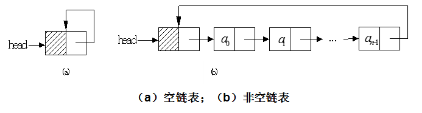

一、单向循环链表：
1、概念：
单向循环链表是单链表的另一种形式，其结构特点是链表中最后一个结点的指针不再是结束标记(null)，而是指向整个链表的第一个结点，从而使单链表形成一个环。
和单链表相比，循环单链表的长处是从链尾到链头比较方便。当要处理的数据元素序列具有环型结构特点时，适合于采用循环单链表。
和单链表相同，循环单链表也有带头结点结构和不带头结点结构两种，带头结点的循环单链表实现插入和删除操作时，算法实现较为方便。

带头结点的循环单链表的操作实现方法和带头结点的单链表的操作实现方法类同，差别仅在于：
（1）在构造函数中，要加一条head.next = head 语句，把初始时的带头结点的循环单链表设计成上图中（a）所示的状态。
（2）在index(i)成员函数中，把循环结束判断条件current != null改为current != head。
2、单链表的代码实现：
先回顾上一篇文章，定位到第三段“三、单项链表的代码实现”，我们是需要修改这段里面的(3)LinkList.java代码，(1)和(2)的代码不变。
(3)SingleCycleLinkList.java:单项循环链表类：（核心代码）
package com.yc.singleCycleLinkList;
import com.yc.list.List;
import com.yc.singleLinkList.hasNode.Node;
/**
* Created by yucheng on 2018/8/23.
* 单链表类:
* 注意：
* 1.因为第一个结点的下标是0，那么自然头结点的下标是-1
* 关键：
* 设置了一个current对象，使得每次操作前，利用index()方法使current对象定位到要操作位置的前一个对象
*/
public class SingleCycleLinkList implements List {
Node head; // 头指针
Node current;// 当前结点对象
int size; // 结点的个数
// 构造器
public SingleCycleLinkList(){
// 初始化头结点,使头指针指向头结点，
// 且刚初始化时只有一个头指针和一个头结点，而且头结点中没有数据
head = current = new Node(null);
// 链表的初始长度为零，头结点不算在链表长度内
size = 0;
// 形成一个环
this.head.next = this.head;
}
// 比如我们要在a2这个节点之前进行插入操作，那就先要把当前节点对象定位到a1这个节点，然后修改a1节点的指针域
// 定位函数：即我们要对某个结点进行操作进行，我们需要做两个动作
// 如插入操作：
// 1.找到前一个结点，将其指针指向我们要插入的结点
// 2.将我们要插入的结点的指针指向下一个结点
// 删除操作
// 1.找到前一个结点，将其指针指向下一个结点
public void index(int index) throws Exception{
// 验证输入
if(index < -1 || index > size-1){
throw new Exception("输入错误！");
}
if(index==-1) //说明在头结点之后操作，因为第一个数据元素结点的下标是0，那么头结点的下标自然就是-1了。
return;
current = head.next;// 将当前对象定位到头结点的下一个结点
int j=0;//循环变量
// 实际是将当前对象定位到要操作的对象的前一个对象
while(current != head&&j<index) {
current = current.next;
j++;
}
}
@Override
public void insert(int index, Object obj) throws Exception {
// 输入检查
if (index < 0 || index > size){
throw new Exception("输入错误！");
}
index(index-1);// 定位到要插入的位置的前一个对象
// setNext使current的指针指向new node(),而current.next则使new Node()的指向指向下一个对象
current.setNext(new Node(obj,current.next));
size++;//尺寸加1
}
@Override
public void delete(int index) throws Exception {
if (isEmpty()){
throw new Exception("链表为空!");
}
// 输入检查
if (index < 0 || index > size){
throw new Exception("输入错误！");
}
index(index-1);
current.setNext(current.next.next);
size--;
}
@Override
public Object get(int index) throws Exception {
// 验证输入
if(index < -1 || index > size-1){
throw new Exception("输入错误！");
}
// 1.将当前对象current定位到index对象
index(index);// 这样current就定位到第index个对象了
return current.getElement();
}
@Override
public int size() {
return size;
}
@Override
public boolean isEmpty() {
return size == 0;
}
}
3、单项循环链表的应用举例：
编写击鼓传花小游戏。
游戏规则：N个人围成一个圈，从第一个人开始传花，当数到M时，该人退出游戏，直到剩下最后一个人。
代码实现：
(4)Game.java:
package com.yc.singleCycleLinkList;
import com.yc.singleLinkList.hasNode.Node;
/**
* Created by yucheng on 2018/8/24.
* 单项循环链表的应用举例：
* 游戏规则：N个人围成一个圈，从第一个人开始传花，当数到M时，该人退出游戏，直到剩下最后一个人。
*/
public class Game {
// 创建单向循环链表
SingleCycleLinkList scll = new SingleCycleLinkList();
int num;// 总人数
int key;// 数到谁退出
public Game(int num, int key) {
this.num = num;
this.key = key;
}
public void play() throws Exception{
// 构造数据
for (int i = 0;i < num; i++){
scll.insert(i,i);
}
System.out.println("游戏开始之前");
for (int i = 0;i < scll.size; i++){
System.out.print(scll.get(i) + " ");
}
System.out.println("游戏开始....");
int iCount = num;// 刚开始时等于总人数
int j = 0;//
Node node = scll.head;// 一开始指向头结点
while(iCount!=1)
{
if(node.getElement()!=null&& Integer.parseInt(node.getElement().toString())!=-1)
{
j++;
if(j%key==0)
{
node.setElement(-1);
iCount--;
System.out.println();
for(int i=0;i<scll.size;i++)
{
System.out.print(scll.get(i)+" ");
}
}
}
node = node.next;
}
System.out.println("\n-------游戏结束---------\n");
for(int i=0;i<scll.size;i++)
{
System.out.print(scll.get(i)+" ");
}
}
}
(5)MyTest.java:
package com.yc.singleCycleLinkList;
/**
* Created by yucheng on 2018/8/24.
*/
public class MyTest {
public static void main(String[] args) {
SingleCycleLinkList scll = new SingleCycleLinkList();
/* try {
// 构造数据
for (int i = 0;i < 10;i++){
scll.insert(i,i*i);
}
// 输出
for (int i = 0;i < scll.size;i++){
System.out.print(scll.get(i) + " ");
}
System.out.println("\n" + "========================");
// 删除
scll.delete(7);
// 输出
for (int i = 0;i < scll.size;i++){
System.out.print(scll.get(i) + " ");
}
System.out.println("\n" + "====================");
// 插入
scll.insert(5,100);
for (int i = 0;i < scll.size;i++){
System.out.print(scll.get(i) + " ");
}
} catch (Exception e) {
e.printStackTrace();
}*/
Game game = new Game(10,3);
try {
game.play();
} catch (Exception e) {
e.printStackTrace();
}
}
}